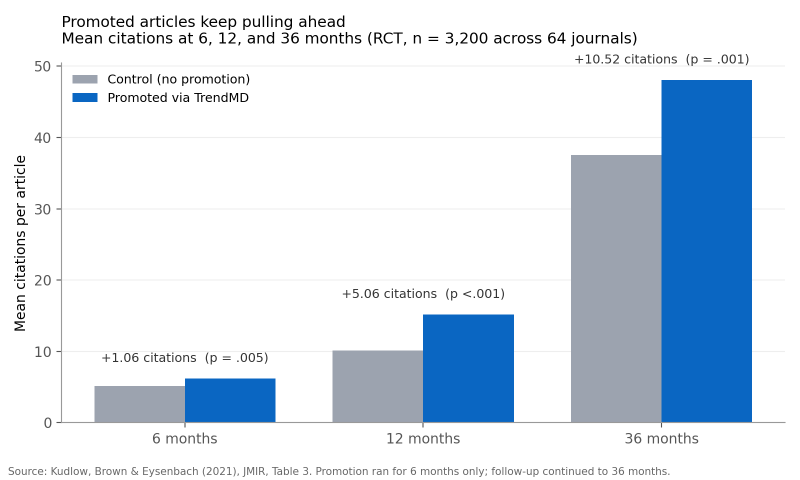

Promoted papers keep pulling ahead: what the Kudlow RCT looks like at 36 months
Most papers don’t fail because they’re bad. They fail because nobody reads them. That isn’t a complaint about readers — it’s a description of a roughly two-million-paper-a-year firehose where even strong work gets buried by default.
The interesting question is whether doing something about it measurably moves citations, or whether promotion is just optics. The cleanest answer we have comes from a randomized controlled trial by Kudlow, Brown and Eysenbach, published in JMIR in 2021. This post walks through what they actually found.
The design
3,200 articles from 64 peer-reviewed journals, eight subject areas ranging from the life sciences to the humanities. Journals were drawn from the top 20 by h5-index in each subject, then eight journals were randomly sampled per area so the study would not be confined to only the highest-impact outlets. Articles were block-randomized at the subject level — 1,600 to the intervention arm, 1,600 to the control.
The intervention itself was narrow: links to the 1,600 intervention articles were surfaced as sponsored recommendations across the TrendMD cross-publisher network (around 4,300 participating journals, ~121 million monthly readers) for six months. Total budget: US $9,600 — about $6 per article. After six months, promotion stopped. The researchers then quietly watched citations accrue for another thirty months.
What the paper shows
The chart below reproduces Table 3 from the paper: mean citations per article at 6, 12 and 36 months, comparing promoted vs control.

At 6 months — effectively during the promotion window — the promoted arm was ahead by a mean of 1.06 citations (p = .005). At 12 months, the gap was 5.06 (p < .001). At 36 months, thirty months after promotion ended, the gap had grown to 10.52 citations (95% CI 3.79–17.25, p = .001). In relative terms that is the headline 28% increase, but the absolute version is the more interesting number: the gap kept widening long after the intervention stopped.
A Cohen d of 0.11 tells you the per-article effect is small. That is honest and worth sitting with. What makes the finding substantial is not the size of the individual shift but the structural property: a modest, cheap, time-bounded intervention produced a citation gap that was still widening three years on. The authors also note that the entire cumulative distribution of the promoted arm was shifted to the right — the gain was not driven by a handful of lucky viral papers.
Why this is interesting
Two reasons.
First, causal inference. Most of the scholarly-visibility literature is correlational: popular authors get cited more, active social-media users get cited more, open-access papers may get cited more (the meta-analyses disagree). With evidence that weak, it is easy to conclude that promotion is a proxy for being good rather than a lever you can pull. Block-randomization at the subject level cuts through that problem.
Second, the mechanism the authors imply. Dissemination generates reads, reads generate downstream citations, and citations generate further visibility in citation-weighted ranking systems. A push at the early part of that curve compounds across years. Six months of promotion bought a three-year advantage that was still accumulating.
What to take away
If you have done good work and left it unpromoted because promotion feels indecorous, you are quietly taxing your own research. The 28% figure is a floor — TrendMD is one specific channel. Targeted outreach to adjacent labs, mailing lists, newsletters, conference circulation, and social posts probably compound on top.
Pick one paper this week that you admire and wish more people knew about. Send it to one person who should read it. Then do it again next week. The chart above is what consistent, unfashionable legwork looks like three years in.